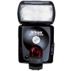

器材库 > 闪光灯 > Speedlight SB-80DX

详细规格
发布日期
2002-02
厂家推荐价格
55,000.00 （日元）
闪光指数
17/14mm 19/17mm 30/24mm 32/28mm 38/35mm 33/50mm 50/70mm 53/85mm 56/105mm
闪光涵盖范围
24~105mm，5mm分级变焦; 17mm：使用内置扩散片; 14mm：使用柔光罩
闪光次数
手动全光输出约150次
回电时间
手动全光输出约6秒
闪光曝光控制
TTL自动控制: F5, F100, F80, F65, FM3A, D1系列或D100; 非TTL自动控制; 手动控制: 8档输出; 使用35mm胶片单反: 3D多重感应均衡补充闪光, 多重感应均衡补充闪光, 矩阵补充闪光, 偏重中央补充闪光/重点补充闪光; 手动输出模式: F5, F100, N90s, N80或N 65
自动对焦辅助光
当使用尼康自动对焦单镜反光相机在弱光条件下作自动对焦操作时, 会自动向主体发出 LED 光束
其他特点
模拟灯, 防红眼
附件
柔光罩 SW-10H, 软袋 SS-80
电池
4枚1.5V LR6 (AA 碱性) / 1.2V KR-AA (AA 镍镉) / 1.5V FR6 (AA 锂)电池
尺寸
70.5 × 127.5 × 91.5mm
重量
335g
摄影像2013-03-22 08:47
gfenght2011-09-30 21:184 分
操作性 4.00功能性 4.00美观性 4.00趣味性 4.00耐用性 4.00性价比 4.00
johnlu0072011-05-04 02:125 分
操作性 5.00功能性 5.00美观性 5.00趣味性 5.00耐用性 5.00性价比 5.00
科瓦切维奇2010-08-10 21:405 分
操作性 5.00功能性 5.00美观性 5.00趣味性 5.00耐用性 5.00性价比 5.00
ming09172010-04-01 15:074.42 分
操作性 4.50功能性 4.50美观性 4.50趣味性 4.50耐用性 4.50性价比 4.00
princetae2007-08-12 07:554.42 分
操作性 4.00功能性 4.50美观性 4.50趣味性 4.00耐用性 4.50性价比 5.00
么都行2007-02-10 13:184.08 分
操作性 4.00功能性 4.00美观性 4.00趣味性 4.00耐用性 4.50性价比 4.00
bxxcz2006-12-19 09:324.17 分
操作性 4.00功能性 5.00美观性 5.00趣味性 5.00耐用性 5.00性价比 1.00
bxxcz2006-12-19 09:27
风的足迹2006-11-25 22:444.83 分
操作性 5.00功能性 4.50美观性 5.00趣味性 5.00耐用性 4.50性价比 5.00
产品图 / 样片
尼康 Speedlight SB-80DX